これから配信する投稿
まだ投稿していない下書きを、日付の早い順に14件まで並べています。 投稿が済んだ分は自動的に消えます。更新日時: 2026-09-05 21:19
09/06 (Sun)
ザ・ファシリテーター
森時彦


カードの文言
- 1 表紙: 人を伸ばし、 組織を変える ファシリテーション
- 2 書誌情報: 2004年11月 / 森時彦
- 3 おすすめ1: 畑違いの部署を 任された方
- 3 おすすめ2: 年上の部下を率いて チームを動かしたい方
- 3 おすすめ3: 物語を読みながら スキルを学びたい方
- 4 問いかけ: 専門知識も年齢も上の部下を、 あなたはどう率いますか
- 5 本文: マーケティング出身の黒沢涼子が 製品開発センター長に抜擢される物語
- 6 本文: 組織で人が最初に抱くのは 「自分は受け入れられるだろうか」 という懸念
- 7 本文: ダメなところをさらけ出すほど 関係は早く深くなる。 ジョハリの窓の開放を広げる
- 8 本文: 嘘つき自己紹介という アイスブレイク。 新しい組織でぜひ使ってみたい手法
- 9 まとめ: 中立のファシリテーターと、 あるべき方向を見据える ファシリティブ・リーダー
キャプション
今回は、ストーリー形式でファシリテーションを学べる一冊です。YouTubeで紹介されていたのをきっかけに手に取りました。 物語の主人公は、マーケティング部門のリーダーだった黒沢涼子。畑違いの製品開発センター長に抜擢され、専門知識でも年齢でも自分を上回る男性の部下を率いることになります。二年で組織を変えてくれ、という無茶な依頼から話が動き出します。 面白かったのは、組織における懸念です。初対面の人間が集まってチームをつくるとき、人が最初に抱くのは「自分は受け入れられるだろうか」という感情。ここを振りほどくのがファシリテーターの腕の見せ所だと書かれていて、なるほどと思いました。 もうひとつは、懸念を言語化すること。自分のダメなところをさらけ出したほうが、人間の関係性は早く、深くなる。ジョハリの窓でいう開放の窓を開いていくことで、関係は強くなっていきます。具体的な手法として出てくる「嘘つき自己紹介」も面白くて、自己紹介に一つだけ嘘を混ぜてアイスブレイクさせる。新しい組織を運営する機会があれば、ぜひ使ってみたいと思いました。 そして印象に残ったのが、ファシリテーターは中立の立場を意識するのに対し、ファシリティブ・リーダーはあるべき方向を見据えて意見を引き出す、という違い。目指すべきは、ファシリテーター以上にファシリティブ・リーダーなのだろうと感じました。 チームを任されて悩んでいる方に、物語として読んでみてほしい一冊です。
書籍固有ハッシュタグ
09/07 (Mon)
26年9月前半
ビジネス書 新刊特集


カードの文言
- 1 表紙: 楽しみにしている / 26年ビジネス書新刊4選
- 2 税金はどこへ行くのか 元会計検査院長が見た「日本の財政」（2026年8月24日 / 田中 弥生） 私の注目ポイント: アベノマスク1000億円やガソリン補助金の行方を、元会計検査院長が追う。 税金の使われ方を内側から知れそうです。
- 3 「思い出せない」が、なくなる。（2026年8月24日 / 平田直也） 私の注目ポイント: 顔はわかるのに名前が出てこない、あの感覚。 記憶力世界一の人の語呂合わせの作り方が気になります。
- 4 定着経営（2026年8月24日 / 船井総研ヒューマンキャピタルコンサルティング） 私の注目ポイント: 売上を100万円増やすより、離職を1人防ぐほうが利益は大きい。 この一文の根拠を確かめたいです。
- 5 小さい林業で稼ぐコツ3（2026年8月24日 / 農文協） 私の注目ポイント: 軽トラとチェンソーで、木材自給率40％時代の山を活かす。 枝葉を花材に売る発想まであるそうです。
- 6 まとめ: チェックリスト
キャプション
9月前半の気になる新刊をまとめました。特に1冊目の『税金はどこへ行くのか 元会計検査院長が見た「日本の財政」』は、会計検査院という普段あまり見えない機関の内側から、アベノマスク予算や給付金、補助金の流れをたどる一冊だそうで、税金のムダはなぜなくならないのかという問いにどう答えるのか気になっています。2冊目の『「思い出せない」が、なくなる。』は、名前や置き場所が出てこないという日常の困りごとに、記憶力世界一の方の語呂合わせで挑む本。3冊目の『定着経営』は、採用より先に「辞めない土台」をつくるという順番の話が新鮮でした。4冊目の『小さい林業で稼ぐコツ3』は、山の手入れを自分でやって稼ぐという、ビジネス書として珍しい切り口に惹かれます。どれもまだ読んでいませんが、読むのが楽しみです。
書籍固有ハッシュタグ
09/08 (Tue)
スタートアップ芸人
森武司


カードの文言
- 1 表紙: 芸人からニートへ そこから年商146億円 支えたのは「仲間力」
- 2 書誌情報: 2023年12月7日 / 森武司
- 3 おすすめ1: 一人で頑張ることに 限界を感じている方
- 3 おすすめ2: 仲間と一緒に 何かを始めてみたい方
- 3 おすすめ3: 過去の失敗を 引きずっている方
- 4 問いかけ: 金なし、コネなし、学歴なし。 それでも人生は 巻き返せると思いますか？
- 5 本文: 貯金ゼロ、高卒、4年間のニート。 そこから11事業を黒字化した 著者の出発点
- 6 本文: 採用基準は 「友達になれそうな人」。 仲間と起業するから成功できる
- 7 本文: 優秀な人を仲間にしたいなら 「一番優秀だと思った人を 紹介して」と頼む
- 8 本文: 10店舗中4店舗が赤字なら 黒字化を考えず潰す。 差し引き2店舗黒字という発想
- 9 まとめ: わくわくが原動力。 仲間の集め方と手放し方を 語る実践の記録
キャプション
今回は、経営者の自伝でありながらノウハウ本でもある一冊です。 著者はNSC18期生としてお笑い芸人をしていた方。若手の大会で決勝まで残るも野性爆弾に30対0で完敗し、そこから4年間引きこもりニートになったそうです。高校時代の仲間とNSC同期の激励で立ち上がり起業、現在は化粧品・人材・広告・美容・アート・YouTubeなど関連のない11事業すべてを黒字化、年商146億円。創業以来18年連続増収増益とのこと。 面白いと感じたのは3つ。 ひとつめは採用基準が「友達になれそうな人」であること。日本では「友達と起業すると失敗する」と言われますが、著者は仲間と起業するからこそ成功できると言い切ります。実際、幼稚園からの幼なじみと起業しています。 ふたつめは、優秀な人を仲間にしたいときの方法。優秀な人に「あなたの人生で一番優秀だと思った人を紹介して」と依頼する。シンプルですが真似できそうです。 みっつめはスクラップアンドビルドの考え方。10店舗オープンして6店舗黒字、4店舗赤字なら差し引き2店舗の黒字。赤字の店を黒字化しようとせず潰す。この割り切りは印象に残りました。 失敗したことがない人以上に「あんな失敗を二度としたくない」と思う気持ちのほうが強い。わくわくすることが仕事の原動力。読んでいて背中を押される言葉が多い本でした。 一人で抱え込みがちな方にこそ、めくってみてほしい一冊です。
書籍固有ハッシュタグ
09/09 (Wed)
論語と算盤（上）自己修養篇
渋沢栄一、奥野宣之


カードの文言
- 1 表紙: 道徳と商売は 一致すべきもの 100年前の言葉が今に響く
- 2 書誌情報: 2016年7月 / 渋沢栄一、奥野宣之
- 3 おすすめ1: 古典を現代語訳で 読んでみたい方
- 3 おすすめ2: 仕事の判断軸に 道徳を置きたい方
- 3 おすすめ3: 学びを生涯続ける 姿勢を持ちたい方
- 4 問いかけ: もうけの良し悪しを 何を基準に 判断していますか
- 5 本文: 是非と善悪を見分け 利害と得失を識別する それが事に当たる基本
- 6 本文: 言語も挙動も すべてが「中庸」で あることが望ましい
- 7 本文: 常識の根本原則は 智・情・意の三つ
- 8 本文: 一人の勉強は町に波及し やがて国力になる 学ぶのは自分だけの為でない
- 9 まとめ: 道徳がなければ 商売の良しあしもわからない 論語と算盤は一致する
キャプション
今回は、古典を現代語訳で読むという一冊です。『論語と算盤（上 自己修養篇）』を現代語訳で初めて読み通しました。とても読みやすく、100年前に書かれたとは思えないくらい今の感覚にマッチしていて驚きました。 印象に残ったのは三つ。一つめは、事に当たるときの姿勢について。とっぴなことをせず、ものごとの是非・善悪を見分け、利害・得失を識別する。そして言語も挙動もすべてが「中庸」になっていることが望ましい、という話です。常識の根本原則は智・情・意である、という整理も腑に落ちました。 二つめは、学びについて。智力を働かせること、つまり勉学に励むことは一時期のことではなく、生涯を通じてやっと十分だと言える。しかも一人が勉強することは町全体に波及し、ひいては国力になる。人は自分のためだけでなく、街や国のためにも学ぶのだという視点は、勉強を続ける理由として新鮮でした。 三つめは、書名そのものの主張です。道徳がなければ商売の良しあしもわからない。論語と算盤は一致すべきものである。もうけを測る物差しの手前に、道徳という基準が要るのだという話でした。 古典は難しそうと感じている方こそ、現代語訳から入ってみてほしい一冊です。
書籍固有ハッシュタグ
09/10 (Thu)
26年9月前半
小説 新刊特集


カードの文言
- 1 表紙: 読んでみたい / 26年小説新刊4選
- 2 シャーロック・ホームズの凱旋（2026年8月21日 / 森見登美彦） 私が気になった理由: 名探偵ホームズが大スランプという設定に惹かれます。 ヴィクトリア朝京都という舞台でどんな冒険が起きるのか読んでみたいです。
- 3 あなたが誰かを殺した（2026年8月12日 / 東野 圭吾） 私が気になった理由: 犯人は出頭済み、なのに遺族が自ら「検証会」を開く。 その場に刑事・加賀が現れるという構図が気になります。
- 4 とりどりみどり（2026年9月9日 / 西條奈加） 私が気になった理由: 毒舌の三姉妹に振り回される十一歳の末弟という視点が楽しそうです。 廻船問屋の家族をめぐる謎解き人情物語、読んでみたいです。
- 5 誰何（2026年8月19日 / 伏尾美紀） 私が気になった理由: 二年前に亡くなったはずの女性が孤独死した、という始まりに引き込まれます。 知らない相手の部屋に自分の名刺が残されていた謎が気になります。
- 6 まとめ: チェックリスト
キャプション
9月前半に出た小説から、気になる4冊をまとめました。特に1冊目の『シャーロック・ホームズの凱旋』は、洛中洛外に名を轟かせた名探偵がまさかの大スランプという出だしに、思わず手が伸びました。舞台はヴィクトリア朝京都。ワトソンの手記という形で「非探偵小説的な冒険」が語られるそうで、探偵が謎を解けないところから始まる物語がどう転がるのか読んでみたいです。2冊目の『あなたが誰かを殺した』は、犯人がすでに出頭しているのに遺族が自ら検証会を開くという設定が引っかかります。3冊目の『とりどりみどり』は、遠慮なし気遣いなし毒舌ありの三姉妹と、そのそばで身がすり減る思いをしている十一歳の弟という距離感が楽しそうです。4冊目の『誰何』は、二年前に亡くなったはずの女性が孤独死したという一文だけで気になってしまいました。切り口の違う4冊、秋の読書のはじめに。
書籍固有ハッシュタグ
09/11 (Fri)
ワーケーションのはじめかた
頼定誠, 新谷雅徳


カードの文言
- 1 表紙: 仕事と休暇を あわせて取る 新しい働き方
- 2 書誌情報: 2023年2月6日 / 頼定誠, 新谷雅徳
- 3 おすすめ1: 働く場所を 変えてみたい方
- 3 おすすめ2: 会社にワーケーションを 提案してみたい方
- 3 おすすめ3: 自治体や施設として 誘致に関わる方
- 4 問いかけ: 休暇先で働く。 それは会社にとって 何の得になるのか。
- 5 本文: ワーケーションは WorkとVacationの造語。 仕事と休暇をあわせて取る
- 6 本文: 出張に休暇を足すのは ブリージャー。 休暇先で働くのとは違う
- 7 本文: ユニリーバでは 生産性が上がったとの 肯定回答が75%
- 8 本文: 三菱地所はモチベーション イノベーション コミュニケーションの向上と
- 9 まとめ: 検討から検証まで 導入実務を時系列で追える 実務の教科書
キャプション
今回は働き方の本です。ワーケーションは「Work」と「Vacation」を組み合わせた言葉で、仕事と休暇をあわせて取る働き方。社員の福利厚生だけでなく、生産性や創造性の向上、企業の人事戦略にもつながると期待されていて、働き方改革と地方創生の両面から政府や自治体の支援もあるそうです。 面白かったのは「ブリージャー」という言葉。BusinessとLeisureの造語で、出張先で観光や休息を楽しむ働き方のこと。休暇で訪れた場所で働くワーケーションとは、出発点が逆なんですね。海外出張で土日を挟むのも、ある意味ブリージャーなのかなと考えてしまいました。 企業の事例も具体的でした。ロサンゼルスの法律事務所Quinn Emanuelは、24時間のネットワーク接続を条件に、指定の場所で一週間働く際に2000ドルを支給。ユニリーバは「Work from anytime anywhere」として福利厚生に位置づけ、生産性が上がったという肯定回答は75%。三菱地所はモチベーション・イノベーション・コミュニケーションの向上につながるとしています。 本書は検討・準備・実施・リスクマネジメント・検証まで導入実務を時系列で紹介していて、最終章は誘致する自治体や施設側の話も。基本的に出社しがちな私も、たまにロケーションを変えたくなる時があるので、思い切って提案してみようかなと思いました。
書籍固有ハッシュタグ
09/12 (Sat)
SHOE DOG
フィル・ナイト、大田黒奉之 訳


カードの文言
- 1 表紙: 父から借りた50ドルが 売上300億ドルになるまで ナイキ創業者の告白
- 2 書誌情報: 2017年10月27日 / フィル・ナイト、大田黒奉之 訳
- 3 おすすめ1: 起業や新規事業に 挑む人の生の記録を 読んでみたい方
- 3 おすすめ2: うまくいかない時期を どう耐えたのかを 知りたい方
- 3 おすすめ3: 日本企業と海外企業の 関係の歴史に 興味がある方
- 4 問いかけ: 馬鹿げていると言われる アイディアを 人はどこまで信じられるか
- 5 本文: 24歳で神戸のオニツカを訪ね 「アメリカで売らせてほしい」 と売り込んだところから始まる
- 6 本文: 親日だった代理店関係は 次第に険悪になり販売停止へ 苦肉の策がナイキ創業だった
- 7 本文: 倒産寸前で銀行が手を引いても 日商岩井は融資を止めなかった 商品の良さを見極めたから
- 8 本文: 失敗も未完成もバイヤーに 正直に伝えたこと それが成功の一因だったと思う
- 9 まとめ: 誤りと闘いと犠牲がつきまとう 混沌とした旅路を 創業者自身が赤裸々に語る一冊
キャプション
今回は、起業家の自伝です。ナイキ創業者フィル・ナイトが自ら書いた『SHOE DOG』。BOOK OFFで200円だったので買いました。550ページあるので、読むのに2週間くらいかかりました。 シュードッグとは、靴の製造、販売、輸入、デザインなど、そのすべてに身を捧げる人のこと。 面白かったのは、日本との関わりの深さです。フィル・ナイトはもともとオレゴン州でオニツカタイガー（現アシックス）の北米販売代理店をしていました。当初はとても親日だったのに、徐々にアシックスとは険悪になり、ついには販売停止を通達される。苦肉の策として立ち上げたのがナイキでした。アシックス側の意見は書かれていないので分かりませんが、読んでいると不義理に見えてしまうし、商才がないなとも感じました。 もうひとつは日商岩井（現 双日）の存在。倒産寸前で銀行でさえ融資を止めたときに、双日は止めなかった。本当に商品がいいものだと見極めたからです。 そしてナイキが成功した一因として、失敗したものや未完成なものをバイヤー側に正直に伝えていたことが挙げられます。ビジネスをする上で、正直であることは何より大切なのだと思いました。 分厚いですが、読み終えたときに残るものがある一冊です。
書籍固有ハッシュタグ
09/13 (Sun)
心配すんな。全部上手くいく。
ヒカル1991-


カードの文言
- 1 表紙: 一番の失敗は やりたい事を やらない事
- 2 書誌情報: 2022年9月30日 / ヒカル1991-
- 3 おすすめ1: やりたい事を 先送りにしている方
- 3 おすすめ2: 言葉や思考の使い方を 鍛え直したい方
- 3 おすすめ3: 逆境や批判との 付き合い方を知りたい方
- 4 問いかけ: ゼロのままの自分から 最初の「1」を どうつかむか。
- 5 本文: 夢は公言しろ。 なりたいものになれるのは なろうとしたものだけ。
- 6 本文: 会話では常に答えを持つ。 自分の番でなくても 答えを探す訓練をやめない。
- 7 本文: 新しい事、 人がやっていない事を 探してやってみる。
- 8 本文: 落ち度や過ちは素直に認める。 不利は、有利である。
- 9 まとめ: 普段YouTubeは見なくても 考え方はしっかりしている。 最初の1をつかむための一冊。
キャプション
今回は、カリスマYouTuberヒカルさんの初書籍を読みました。新刊図書に入っていたので手に取った一冊です。普段彼のYouTubeを見ることはないのですが、読んでみると考え方はしっかりしていて、素直に頷ける部分が多くありました。 面白いと感じたのは三つ。ひとつ目は「一番の失敗はやりたい事をやらない事」。目次にも「夢は公言しろ」「なりたいものになれるのは、なろうとしたものだけ」と並んでいて、動き出すことそのものを繰り返し押してくる本です。 ふたつ目は、相手と会話する時に常に答えを持っておくこと。自分が答えるタイミングでなくても、自分だったら何と言うかを探す訓練をやめない。会議でいきなり振られることもあるので、これは仕事でも私生活でも効きそうだと感じました。 三つ目は、新しい事・人がやっていない事を探してやってみるという姿勢。そして落ち度や過ちは素直に認めること。「逆境のマニュアル」という章があり、批判や炎上との向き合い方にも触れられています。 著者は「ゼロからはなにも生まれない、まずは1をつかむことが肝心」と書いています。その1を探している方に。
書籍固有ハッシュタグ
09/14 (Mon)
26年9月前半
殿堂入り書評
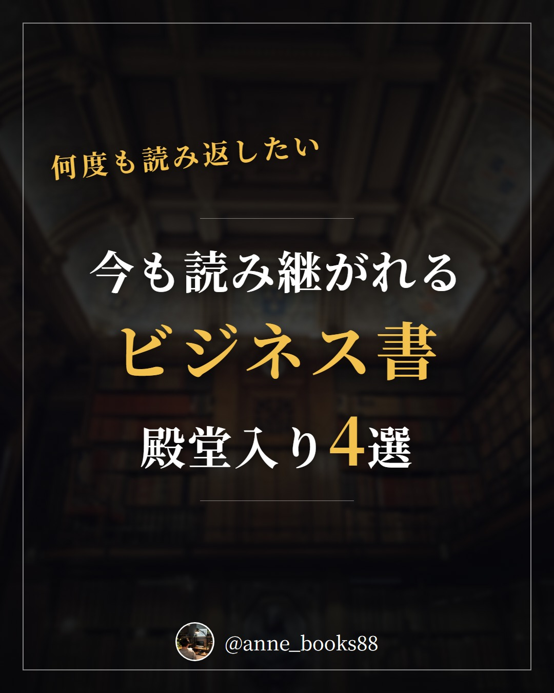
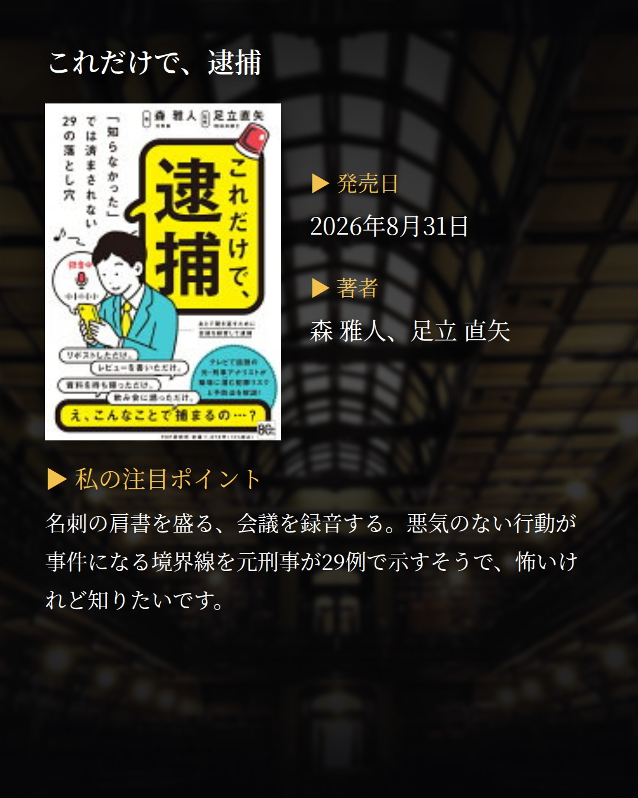
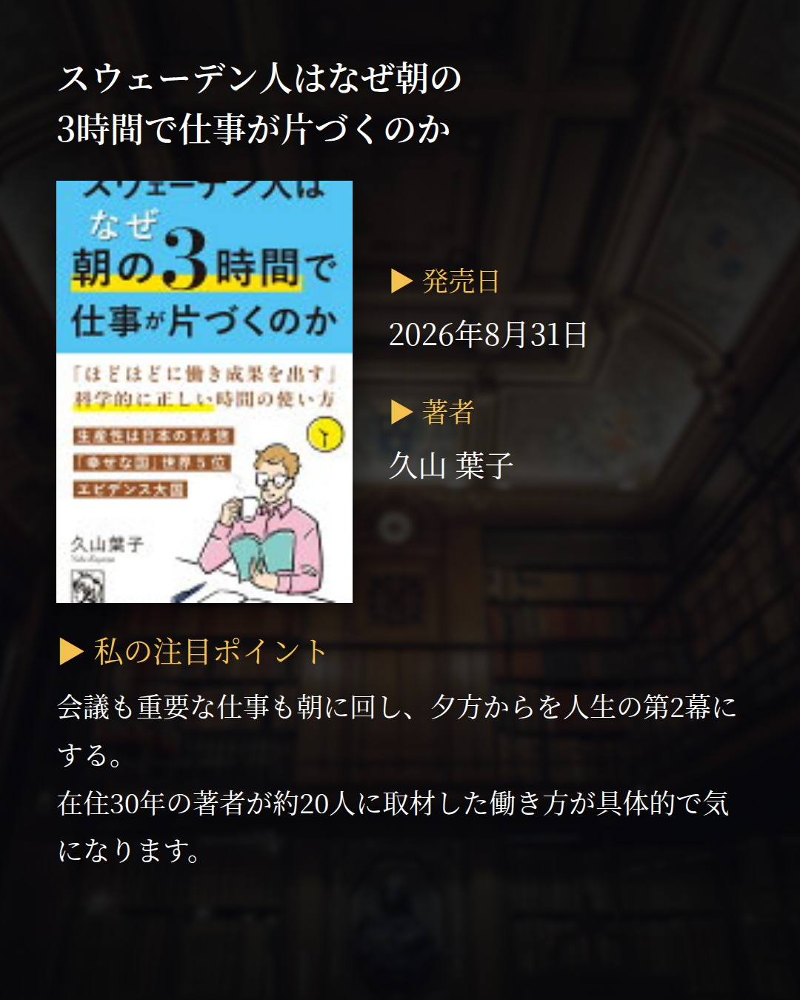
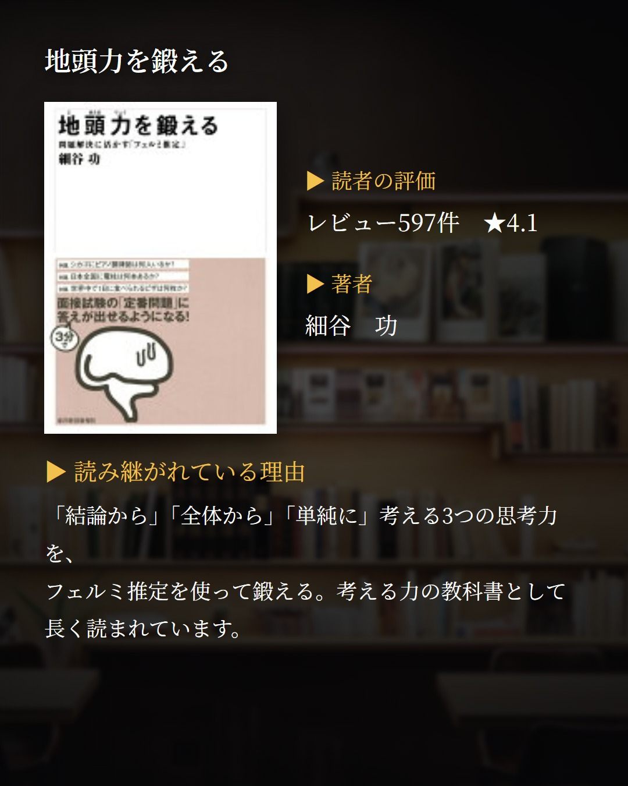
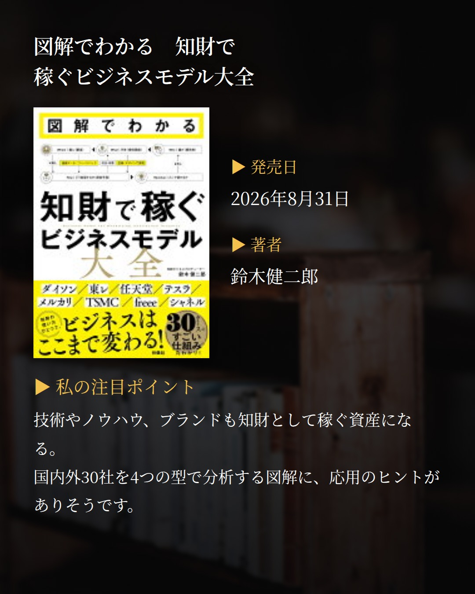
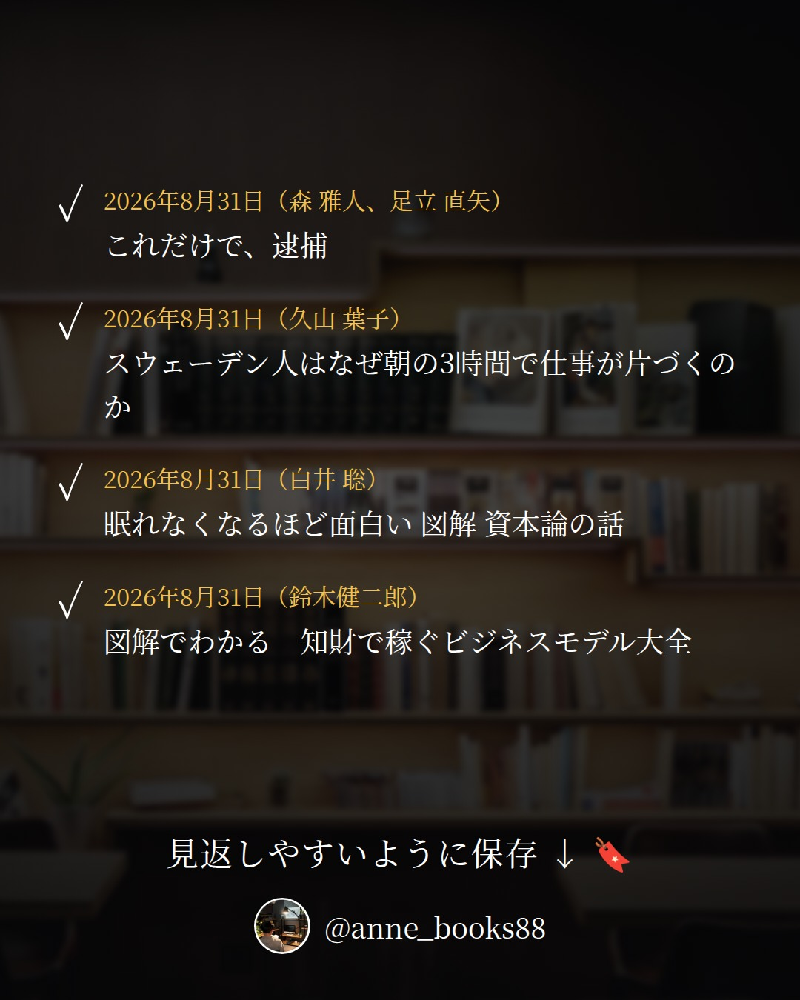
カードの文言
- 1 表紙: 何度も読み返したい / 今も読み継がれるビジネス書殿堂入り4選
- 2 入社1年目の教科書（レビュー1,091件 ★4.0 / 岩瀬 大輔） 読み継がれている理由: 「頼まれたことは必ずやりきる」など仕事の3原則と 50の行動指針。新人にも指導する側にも読まれ続ける定番です。
- 3 現代語訳 論語と算盤（レビュー519件 ★4.0 / 渋沢 栄一、守屋 淳） 読み継がれている理由: 道徳と利益は両立するのか。渋沢栄一の経営哲学を 読みやすい現代語訳で。働き方に迷ったとき立ち返れる古典です。
- 4 地頭力を鍛える（レビュー597件 ★4.1 / 細谷 功） 読み継がれている理由: 「結論から」「全体から」「単純に」考える3つの思考力を、 フェルミ推定を使って鍛える。考える力の教科書として長く読まれています。
- 5 不格好経営（レビュー493件 ★4.2 / 南場智子） 読み継がれている理由: DeNA創業者が明かす失敗の連続と奮闘の舞台裏。 成功譚ではなく「不格好」な過程が書かれているのが読み継がれる理由です。
- 6 まとめ: チェックリスト
キャプション
今も読み継がれているビジネス書を4冊まとめました。特に2冊目の『現代語訳 論語と算盤』は、「論語」＝道徳と「算盤」＝利益を調和させるという渋沢栄一の考えが、明治期に書かれたものなのに今の働き方の議論にそのまま重なる点が気になります。利益至上主義から社会的責任まで価値観が入り乱れる今だからこそ原点に帰る意味がある、と訳者が書いているのも納得できるところです。1冊目の『入社1年目の教科書』は50の行動指針が新人以外にも支持されている本、3冊目の『地頭力を鍛える』はフェルミ推定で考える力を鍛える本、4冊目の『不格好経営』はDeNA創業者が失敗の連続を明かした本。どれも発売から年数が経っても評価が高いまま残っている4冊です。
書籍固有ハッシュタグ
09/15 (Tue)
仕事で必ず結果が出るハイパフォーマー思考
渡邉光太郎


カードの文言
- 1 表紙: 職種を問わない 思考と行動が 結果を分ける
- 2 書誌情報: 2019年2月 / 渡邉光太郎
- 3 おすすめ1: スキルだけでは 伸び悩みを感じている方
- 3 おすすめ2: 方向転換すべきか 迷っている方
- 3 おすすめ3: チームの空気を 入れ替えたい方
- 4 問いかけ: あなたの成果は スキルの差ですか 思考の差ですか
- 5 本文: 仕事には職種を問わない思考と 職種特有のスキル 二つのレイヤーがある
- 6 本文: 二つで悩んだ相手に 買わなかった方を贈る 期待を上回るという発想
- 7 本文: 意固地にならず方向転換する ジャンボ尾崎は投手から打者へ そしてプロゴルファーへ
- 8 本文: 異なる価値観を受け入れ チームに新鮮なメンバーを入れる 異見こそ力になる
- 9 まとめ: 武器ができたら試してみる 北斎は70歳を超えて 飛躍的に進化した
キャプション
今回は、仕事の成果の出し方を扱ったビジネス書です。 面白かったのは、仕事の能力を二つのレイヤーで捉える視点でした。部門や職種を問わない思考・行動と、部門や職種に特有のスキル。この二つを有効活用することが重要だと書かれています。日本の生産性がOECD38カ国中23位であることや、新卒一括採用とジョブローテーションの話とあわせて読むと、スキルだけを磨いても足りない理由が見えてきます。 もう一つ印象に残ったのが、期待を上回るパフォーマンスの例です。二つで悩んで買わなかった方をプレゼントする。相手の期待の少し外側に踏み出す行動が、記憶に残る仕事をつくるのだと思いました。 そして、柔軟に方向転換すること。ジャンボ尾崎は甲子園優勝投手としてライオンズに入団し、投手から打者に転向、3年目に引退してプロゴルファーへ。意固地にならないことの強さが伝わってきます。 葛飾北斎は70歳を超えてから絵画表現が飛躍的に進化した、という一節も心に残りました。世で戦える武器ができたら惜しまず試してみる。いつからでも遅くない、と背中を押される一冊です。
書籍固有ハッシュタグ
09/16 (Wed)
フランス人は10着しか服を持たない
ジェニファー・スコット, 神崎朗子


カードの文言
- 1 表紙: 服を減らすより 自分に合うものだけを 長く大切に使う
- 2 書誌情報: 2020年9月12日 / ジェニファー・スコット, 神崎朗子
- 3 おすすめ1: クローゼットを 開けるたびに もやっとする方
- 3 おすすめ2: 高かったから捨てられない という理由で 服を持ち続けている方
- 3 おすすめ3: 暮らしの質を 少しずつ上げていきたい方
- 4 問いかけ: その服は本当に必要で 今の自分に 合っていますか
- 5 本文: パリの人は同じ服を 着まわすことを厭わない 大事なのは自分らしさ
- 6 本文: 同じ服はありえないという カリフォルニアとの対比が 価値観の違いを映す
- 7 本文: お金を出したから捨てられない その理由で 持ち続けていないか
- 8 本文: いつも一番いいものを使えば 日常が特別になる
- 9 まとめ: 部屋を整え良いものを長く使う その積み重ねが 生活の質を上げていく
キャプション
今回は、暮らし方と身の回りのものとの付き合い方を考える一冊です。100万部のベストセラーシリーズの最終巻で、2020年に文庫化されたものだそうです。 おそらくキラキラ系女子が読む本なのだと思いますが、ローランドさんがおすすめしていたので手に取りました。 面白かったのは、パリの人とカリフォルニアの人の対比です。パリの人は同じ服を着まわすことを厭わない。大事なのは自分らしさを表現できているかどうか。一方でカリフォルニアの人にとって、同じ服の着まわしはありえない。この違いが繰り返し書かれていて、自分がどちらに近いかを考えさせられました。 もうひとつ刺さったのが、お金を出して買ったからその服は捨てられない、となっていないかという問いかけ。その服は本当に必要で今の自分に合っているのか、自信を持って外を歩けるのか。読みながら思わずワードローブを開けて、自分が何をどれだけ大切にしているのかを確かめたくなりました。 出版社の紹介によれば、したくないことは感じよくきっぱりと断る、誰にでも礼儀をもって接する、といった生き方の話も含まれているようです。 常に部屋をきれいに保つことが自分の気持ちを上げることにつながる。良いものを長く使うことが生活の質を上げるコツ。いつも一番いいものを使えば、日常が特別になる。 クローゼットを開けるのが少し憂うつな方は、ぜひ。
書籍固有ハッシュタグ
09/17 (Thu)
26年9月後半
殿堂入り書評
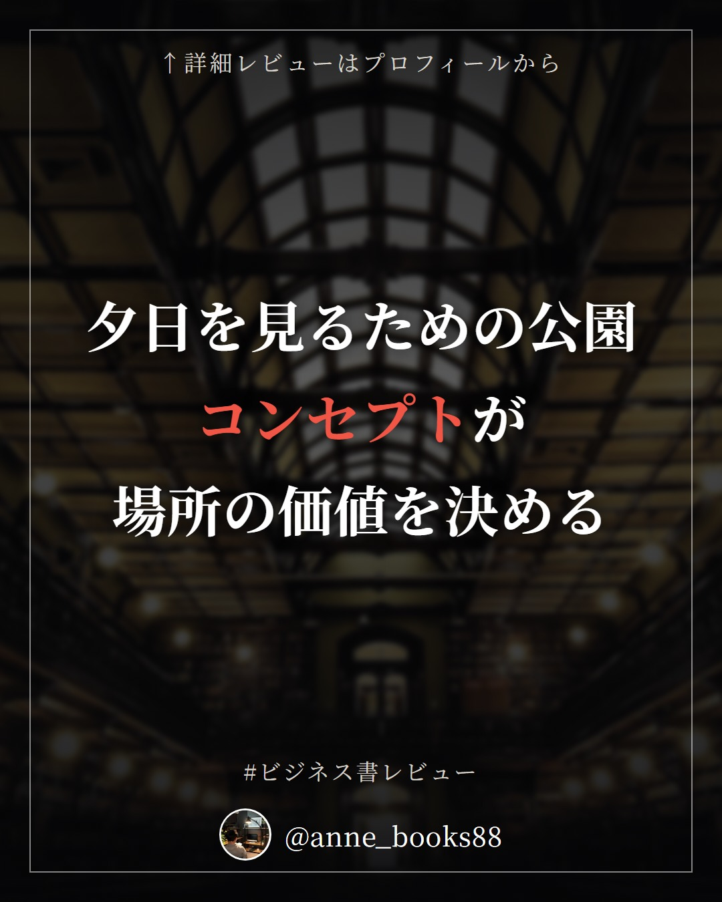
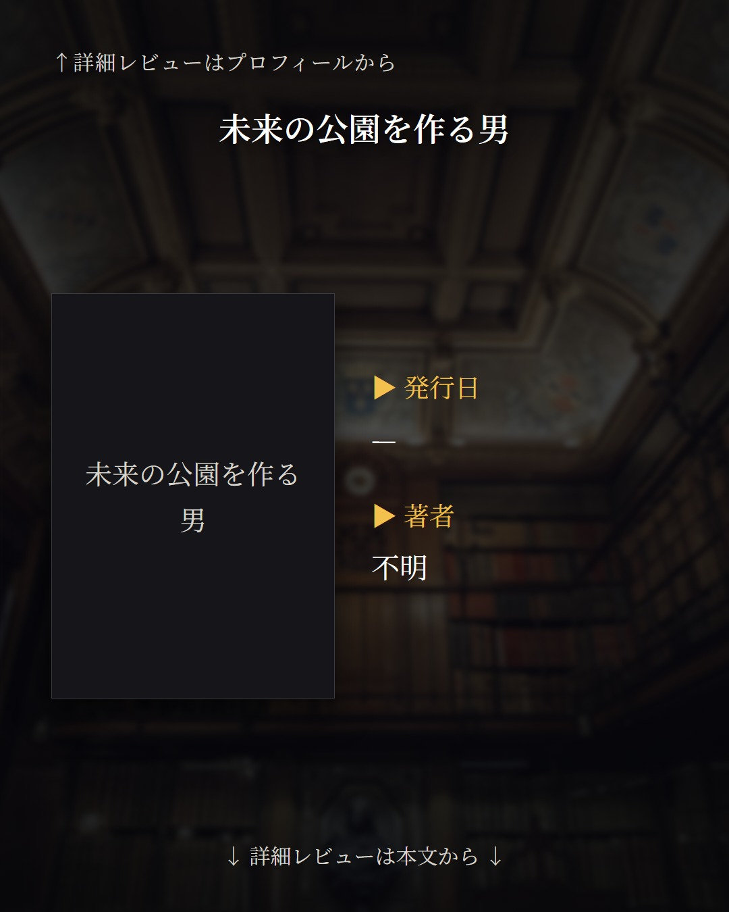
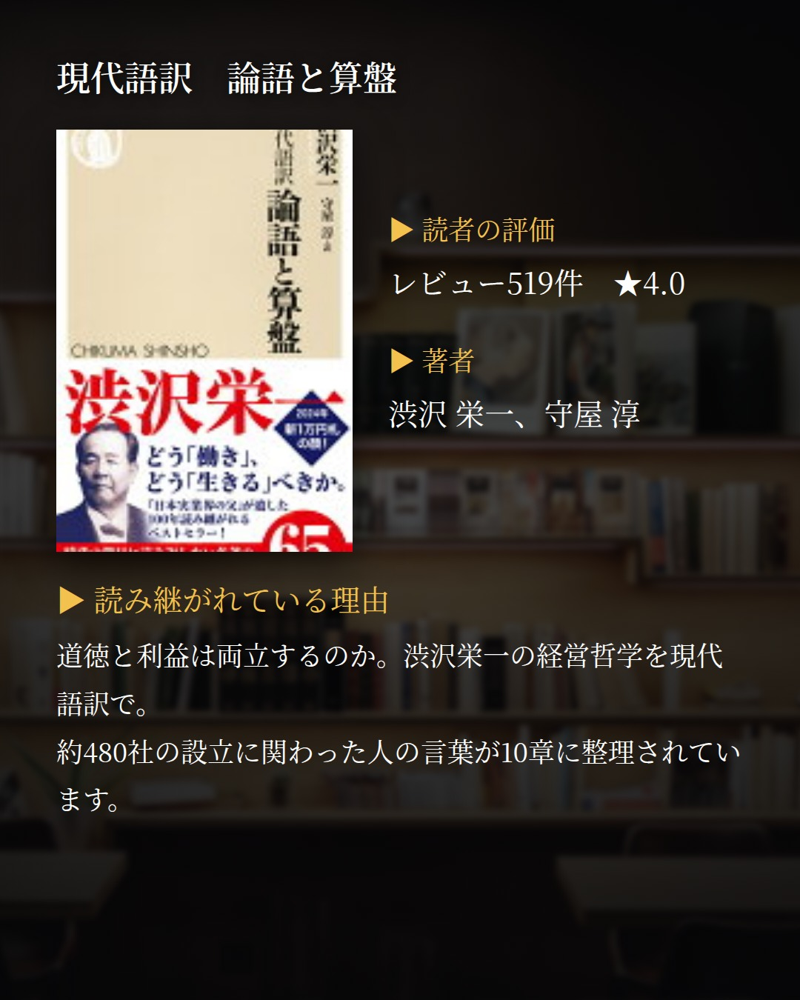

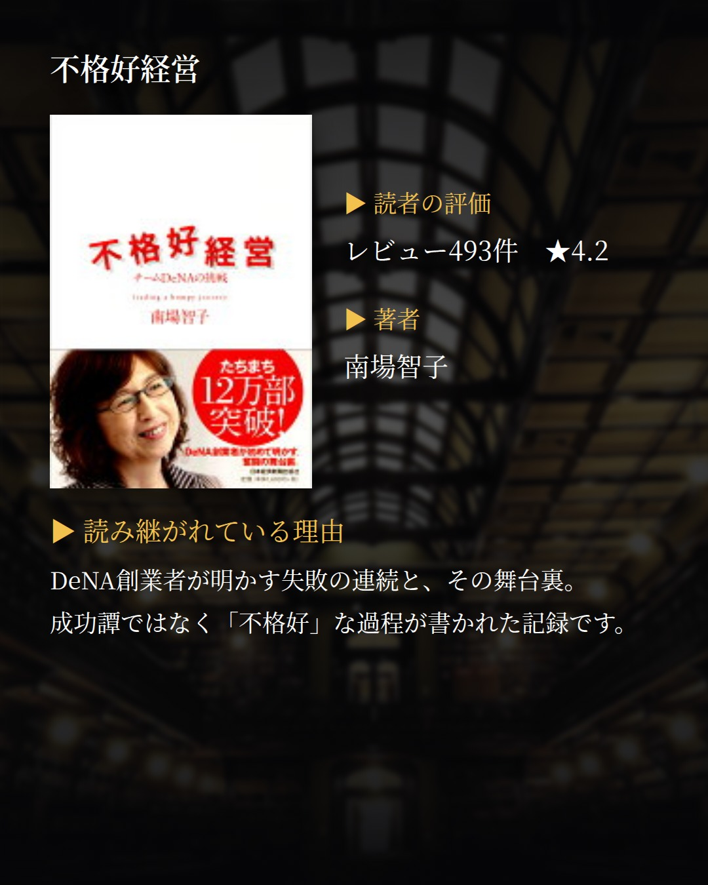
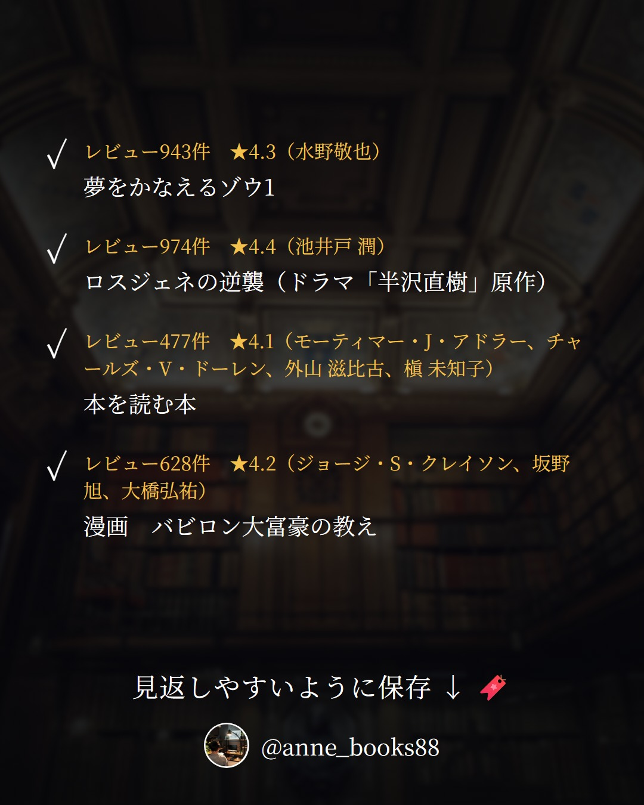
カードの文言
- 1 表紙: 何度も読み返したい / 今も読み継がれるビジネス書殿堂入り4選
- 2 夢をかなえるゾウ1（レビュー943件 ★4.3 / 水野敬也） 読み継がれている理由: 関西弁のゾウの神様が出す課題は「靴をみがく」など地味なものばかり。 物語で読める自己啓発として長く支持されています。
- 3 ロスジェネの逆襲（ドラマ「半沢直樹」原作）（レビュー974件 ★4.4 / 池井戸 潤） 読み継がれている理由: 出向先の証券子会社から、親会社のエリートに挑む半沢直樹の第3弾。 団塊・バブル・ロスジェネ、世代を超えた戦いが描かれます。
- 4 本を読む本（レビュー477件 ★4.1 / モーティマー・J・アドラー、チャールズ・V・ドーレン、外山 滋比古、槇 未知子） 読み継がれている理由: 1940年刊行以来、各国で訳されてきた読書法の古典。 点検読書から分析読書まで、段階を追った読み方が解説されます。
- 5 漫画 バビロン大富豪の教え（レビュー628件 ★4.2 / ジョージ・S・クレイソン、坂野旭、大橋弘祐） 読み継がれている理由: 古代バビロニアから伝わるお金の知恵を漫画化した一冊。 儲け方の技術ではなく、お金に縛られない生き方が語られます。
- 6 まとめ: チェックリスト
キャプション
今も読み継がれているビジネス書を4冊まとめました。特に3冊目の『本を読む本』は、1940年にアメリカで刊行されてから世界各国で翻訳され、読み継がれてきた読書の古典です。読むに値する良書とは何か、読書の本来の意味とは何かを問いながら、初級読書から点検読書、分析読書、そして最終レベルまでを段階的に示していく構成になっています。読書術の本はたくさんありますが、80年以上も残っているという事実そのものが気になりました。ほかに選んだのは、関西弁のゾウの神様が地味な課題を出す『夢をかなえるゾウ1』、出向先から親会社に挑む『ロスジェネの逆襲』、100年読み継がれるお金の名著を漫画化した『漫画 バビロン大富豪の教え』。物語で読むもの、技術を学ぶもの、切り口はそれぞれ違いますが、どれも長く手に取られ続けている4冊です。
書籍固有ハッシュタグ
09/18 (Fri)
パナソニック覚醒
樋口泰行

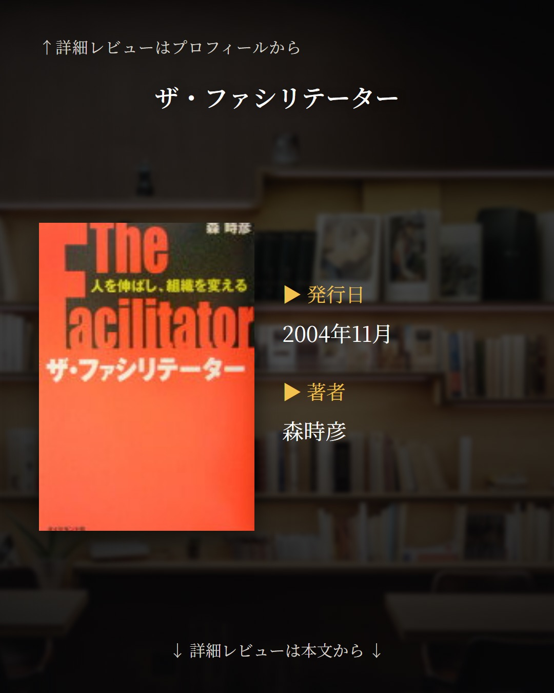
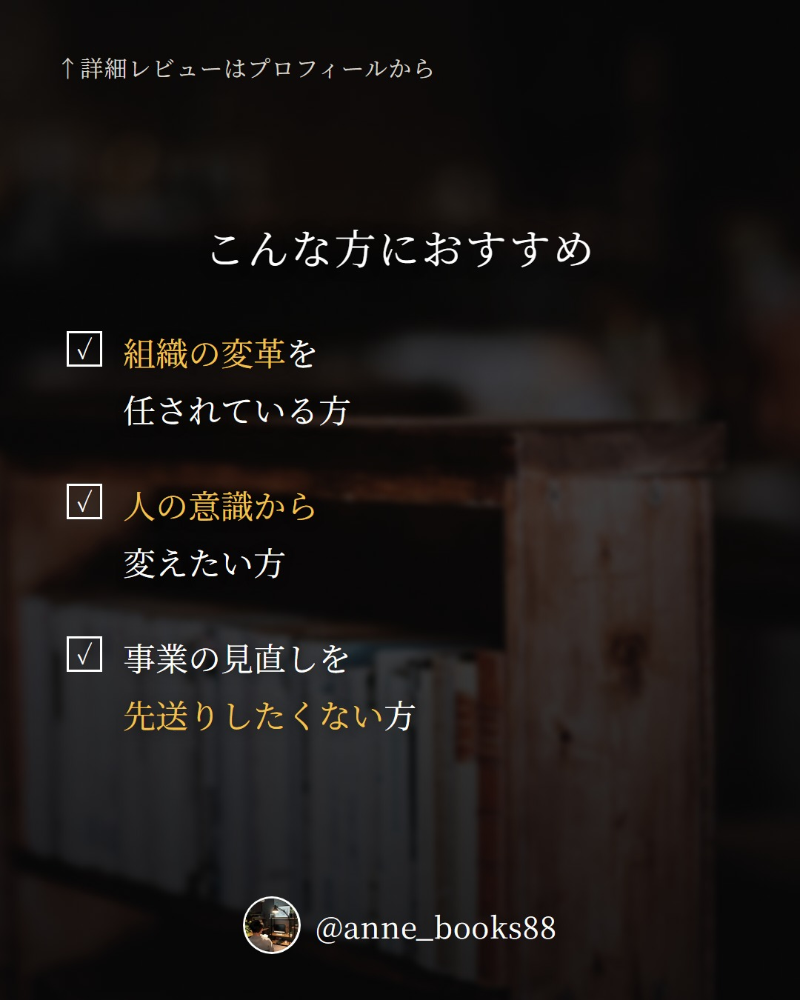
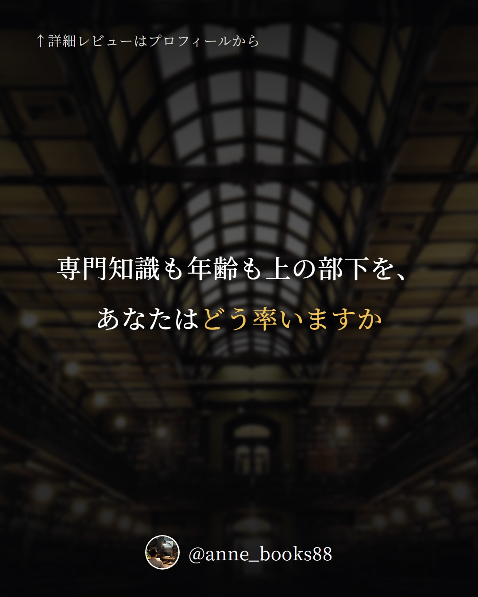
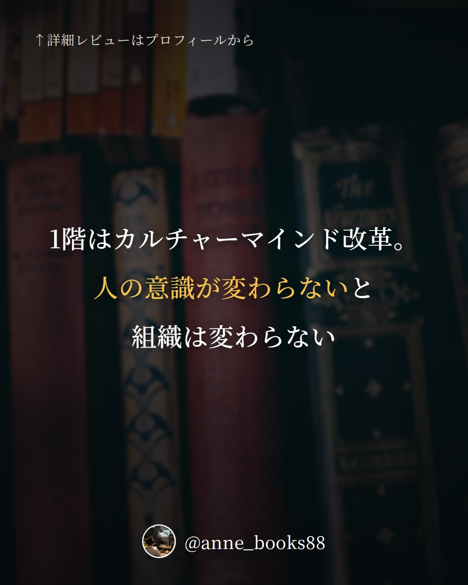

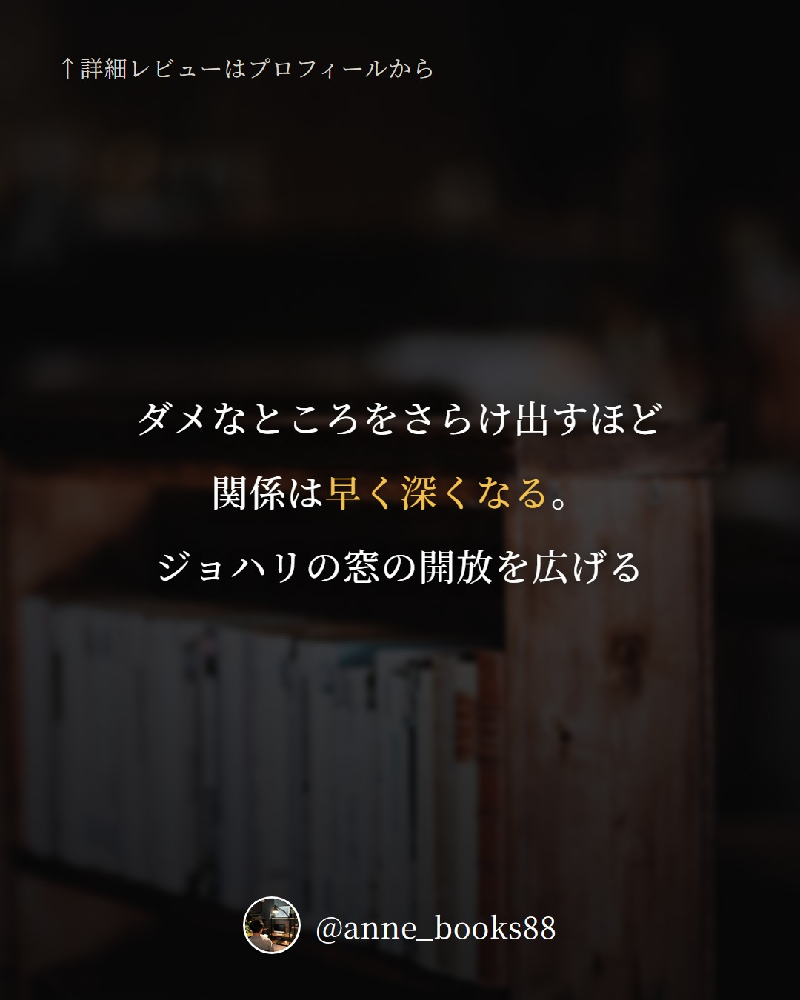
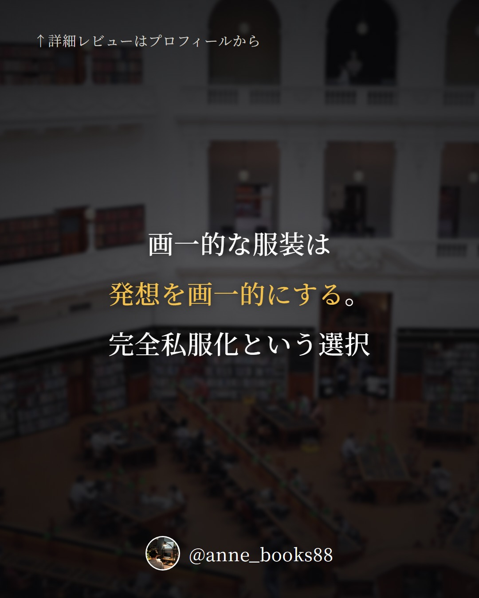

カードの文言
- 1 表紙: 変われなかった会社が 変われた理由
- 2 書誌情報: 2022年4月15日 / 樋口泰行
- 3 おすすめ1: 組織の変革を 任されている方
- 3 おすすめ2: 人の意識から 変えたい方
- 3 おすすめ3: 事業の見直しを 先送りしたくない方
- 4 問いかけ: 制度を作っただけで 組織は変わりましたか
- 5 本文: 1階はカルチャーマインド改革。 人の意識が変わらないと 組織は変わらない
- 6 本文: 2階はソリューションシフト、 3階は事業立地改革。 順番に積み上げる
- 7 本文: 創業の工場だからと 聖域を作らない。 シビアに見極める
- 8 本文: 画一的な服装は 発想を画一的にする。 完全私服化という選択
- 9 まとめ: ビッグピクチャーを描き 聖域なく見極める。 変革の順序が見える一冊
キャプション
今回は、組織変革の実践記録です。25年ぶりに古巣へ戻った樋口泰行さんが、パナソニック コネクトの社長として取り組んだ変革を42項目にわたって語っています。 面白いと感じたのは、変革を「1階・2階・3階」と building のように積み上げて考えている点。1階はカルチャーマインド改革で、まずは人の意識が変わらないと絶対に会社や組織は変わらないという考え方。その上に2階のソリューションシフト、ビジネスモデル改革、そして3階の事業立地改革が乗る。順番が明確なのが印象的でした。 もうひとつは、聖域を作らないこと。創業の品目だから、創業の工場だから、という理由で判断を甘くしない。松下電器の聖地とされた岡山工場の閉鎖という決断についても語られています。ポートフォリオマネジメントから逃げない、という項目がまさにそれだと思いました。 そして個人的にいちばん腑に落ちたのが、画一的な服装は発想を画一的にする、という指摘。会社を完全私服化して、自由なアイディアが生まれやすい状態をつくる。小さく見えて、意識に効く打ち手だと感じます。 変革推進室を作っただけでは足りない。何から手をつけるか迷っている方に。
書籍固有ハッシュタグ
09/19 (Sat)
胸アツ 戦略図鑑
齊藤颯人, 本郷和人, 本村凌二

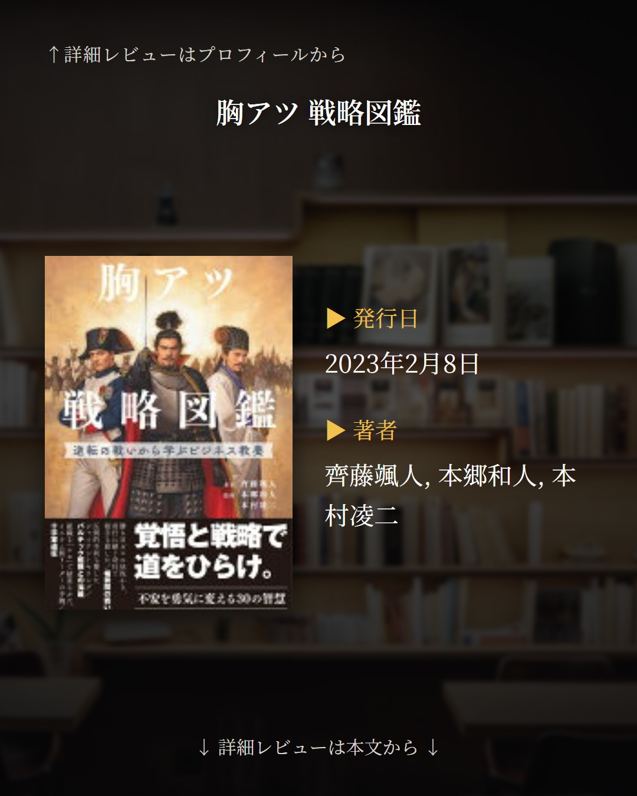
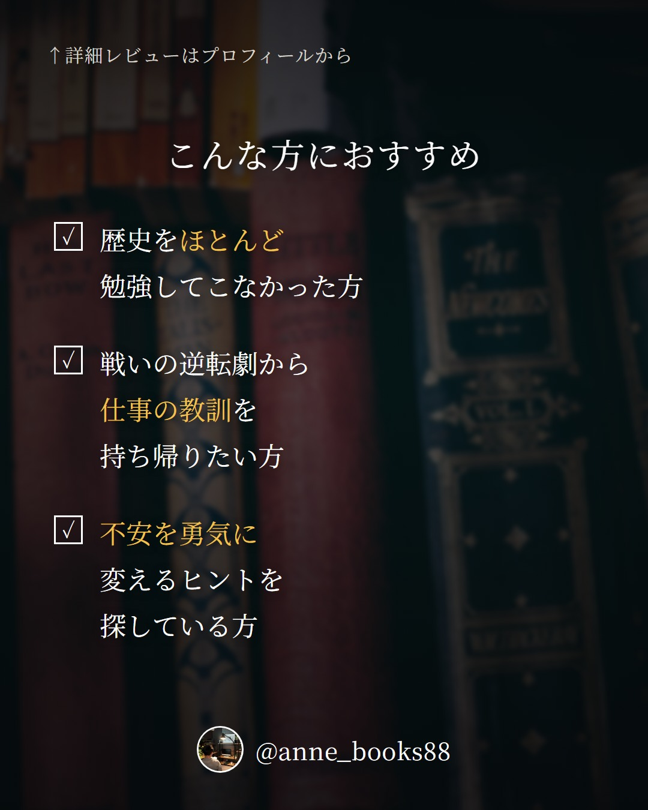
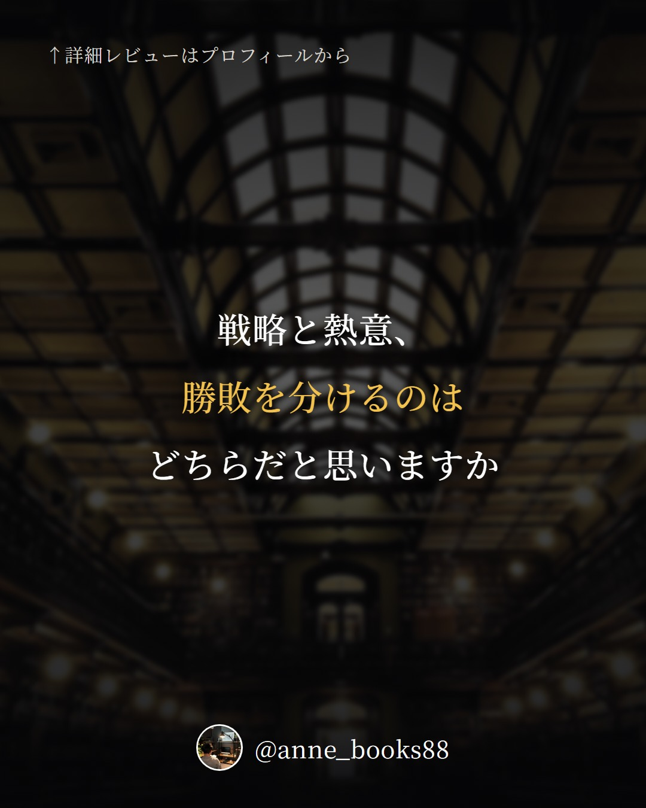
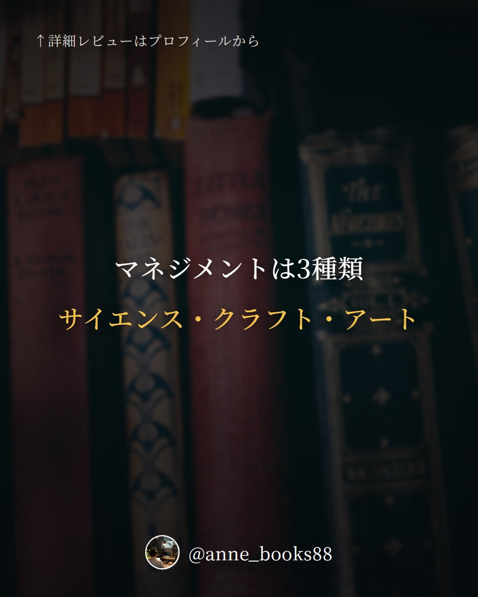
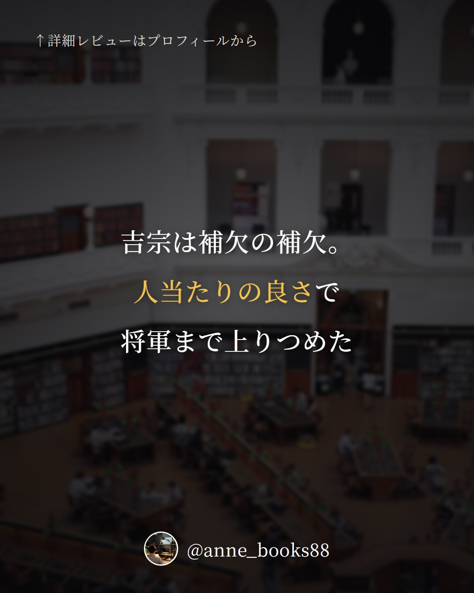
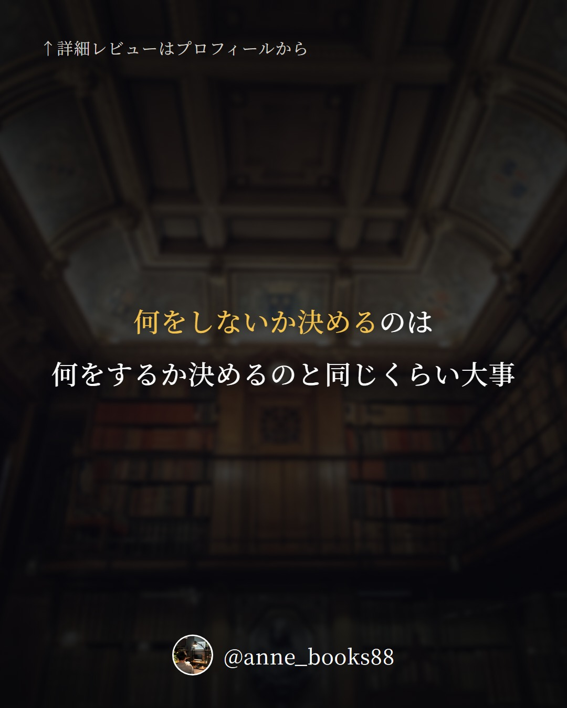
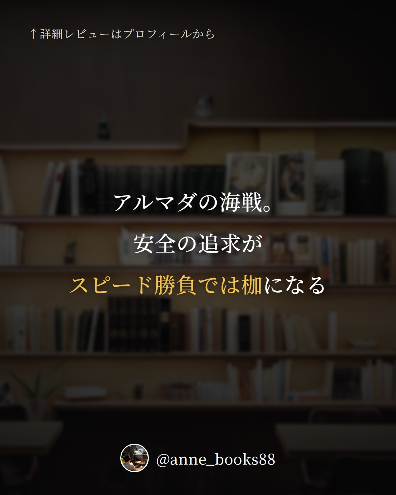


カードの文言
- 1 表紙: 逆転の戦いから 学ぶ、覚悟と戦略の 30の智慧
- 2 書誌情報: 2023年2月8日 / 齊藤颯人, 本郷和人, 本村凌二
- 3 おすすめ1: 歴史をほとんど 勉強してこなかった方
- 3 おすすめ2: 戦いの逆転劇から 仕事の教訓を 持ち帰りたい方
- 3 おすすめ3: 不安を勇気に 変えるヒントを 探している方
- 4 問いかけ: 戦略と熱意、 勝敗を分けるのは どちらだと思いますか
- 5 本文: 桶狭間は無策だった説も。 結果を出すのは 最後は熱意と直感
- 6 本文: 吉宗は補欠の補欠。 人当たりの良さで 将軍まで上りつめた
- 7 本文: 長州征伐が示すのは、 統率なき大群より 統率された精鋭の強さ
- 8 本文: アルマダの海戦。 安全の追求が スピード勝負では枷になる
- 9 まとめ: 30の戦いを通して 戦略と覚悟を学び直す、 歴史が苦手でも読める一冊
キャプション
今回は、歴史上の戦いからビジネス教養を学ぶ図鑑タイプの一冊です。本屋をぶらぶらしていて立ち読みしたのがきっかけでした。世界史も日本史も大学受験の科目になかったので、正直ほとんど真面目に勉強しておらず、初見の話ばかりでした。 面白かったのは桶狭間の戦い。雨にまぎれて今川義元を叩いたというのが定説ですが、最近は無策だったことが明らかになっているそうです。それでも結果につながったのは信長の熱意と直感。最後にものを言うのは熱意なのかもしれません。 徳川吉宗の話も印象的でした。御三家では格下の紀州徳川、その藩主の補欠という「補欠の補欠」だったのに、人間関係と人当たりの良さで将軍にまで上りつめた。実力だけが道をひらくわけではない、という読み方もできます。 そしてアルマダの海戦。安全を追求することは、スピードが重要な戦いでは余計な時間や手間になる。ちなみに「無敵艦隊」は当時の呼び名ではなく、後にイギリス人が呼び始めた、賞賛と皮肉の混じった言い方だそうです。 出版社の紹介文によれば、覚悟と戦略で道をひらく30の智慧が収められているとのこと。歴史が得意でなくても、拾える教訓がたくさんありました。あなたはどの戦いから何を持ち帰りますか。